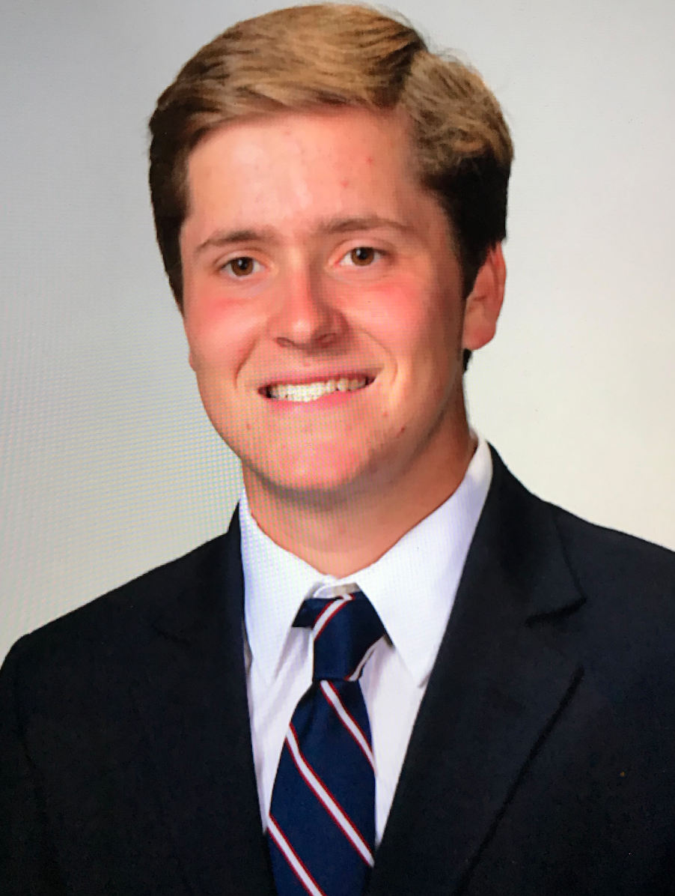

Quick Biography

Name: Chris Rehagen
Hometown: St. Charles, Missouri
School: University of Missouri
Academic Year: Junior
Resume Document:
Download
- Education
-
University of MissouriColumbia, MO - Class of Spring, 2020
Major: Information Technology
Minor: Computer Science
GPA: 3.11
- Work Experience
-
Freelance Web DevelopementColumbia, MO
- Redesigned and updated my fraternity’s website and added additional pages, functionality and content
- Added a dedicated recruitment form to aid our engagement with potential new members which received over 60 submissions during our summer recruitment period
- Developed a complete, multi-page website for a marketing start-up
-
Summer Camp CounselorSt. Charles, MO
- Plan and execute activities for kids ages 6-14, as well as organize and supervise the children in recreational programs
- Responsible for the safety and well-being of over 150 children enrolled in the camp
- Provided aid and support to special needs children to provide them an inclusive camp experience
-
Lead Youth Sports CounselorSt. Charles, MO
- Mentor children aged 4-10 years old in a variety of sports including T-ball, soccer, basketball, and hockey
- Managed 5-10 reporting staff members efficiently to execute programs
- Effectively use public relations skills to interact with parents and answer and respond to any questions or inquiries
- Leadership and Activites
-
Phi Delta Theta FraternityColumbia, MO
Re-Founding Father and Warden
- Held position of Warden and served as the head of standards, expectations, and excellence for the chapter
- Serve on the Executive Board to make guiding decisions for a chapter of 153 members
- Oversee and support 4 corresponding chapter officers with day to day tasks and operations
- Aided in our chapter achieving 1st place out of 30 in grades through my standards and expectations position
Mizzou Computing Association Columbia, MO
- Attend events and educational sessions related to topics of Computer Science and IT to supplement what I learn in class
- Meet and network with other members in the learning environment of our shared field to improve our skills and expand our knowledge
Interfraternity Council Peer Educators Columbia, MO
- Educate fraternity members on issues of sexual violence, alcohol management, and mental health
- Collaborate with follow Mizzou fraternity men to deliver presentations and facilitations to groups ranging from 15-120 members
Interfraternity Council Recruitment GuideColumbia, MO
Rho Gamma
- Lead incoming freshman students through fraternity recruitment as a disaffiliated, unbiased mentor
- Guided a small group of 25 students through the process and provided advice for them to be successfu
- Worked with fellow fraternity men and university faculty to handle several hundred new members
- Additional Information
-
Technical Skills: C, Java, HTML5, CSS, JavaScript, PHP, Swift, Adobe Premiere Pro, Excel, AWS, Apache
Volunteering: Columbia Walk to Defeat ALS, The Food Bank for Central and Northeast Missouri, Harry S Truman VA Hospital, Team Activities for Special Kids
Relevant Course Work (as of Fall '18):
- Algorithm Design and Programming I & II
- Object Oriented Programming I
- Web Development I & II
- iOS App Development I
- Digital Logic Design
- Fundamentals of Network Technology
- Calculus 1 & 2
Upcoming Course Work (taking in the Spring '19 Semester):
- iOS App Development II
- Cyber Security
- C# / .NET Development
- Database Application & Information Systems